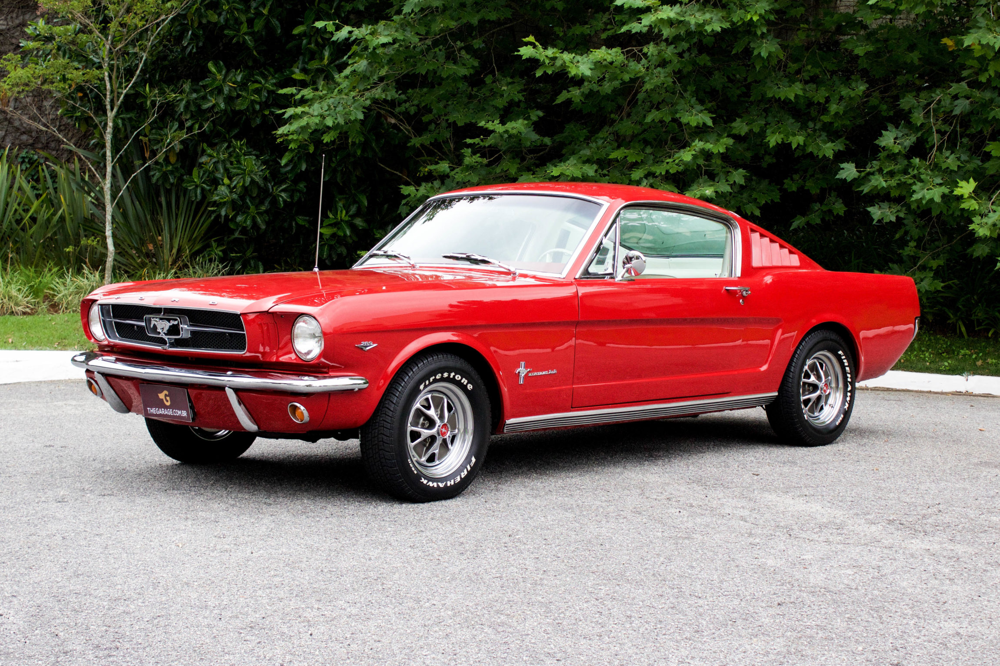
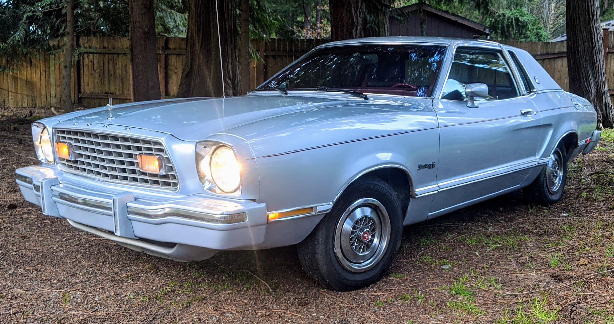
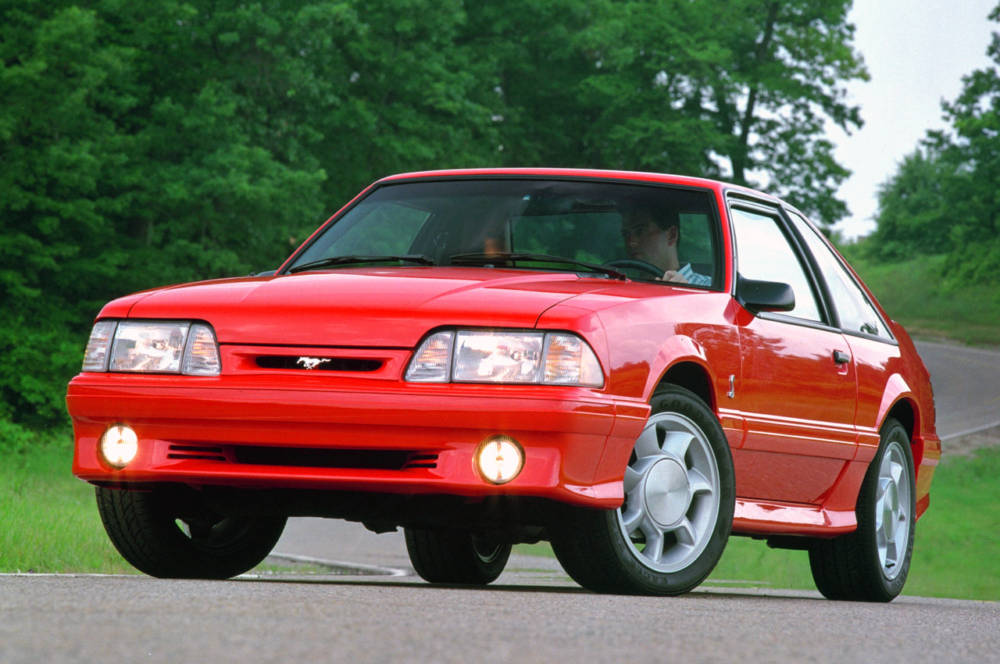
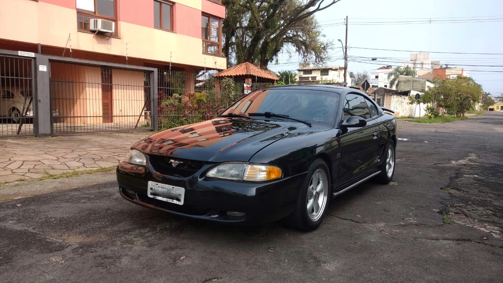
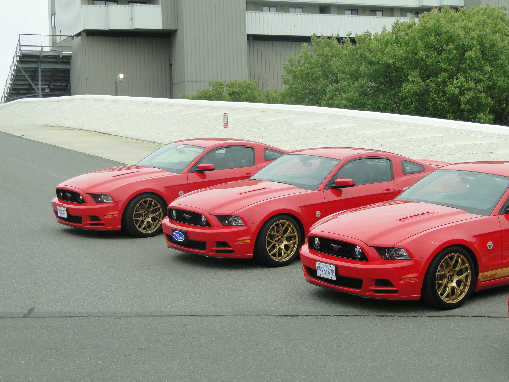
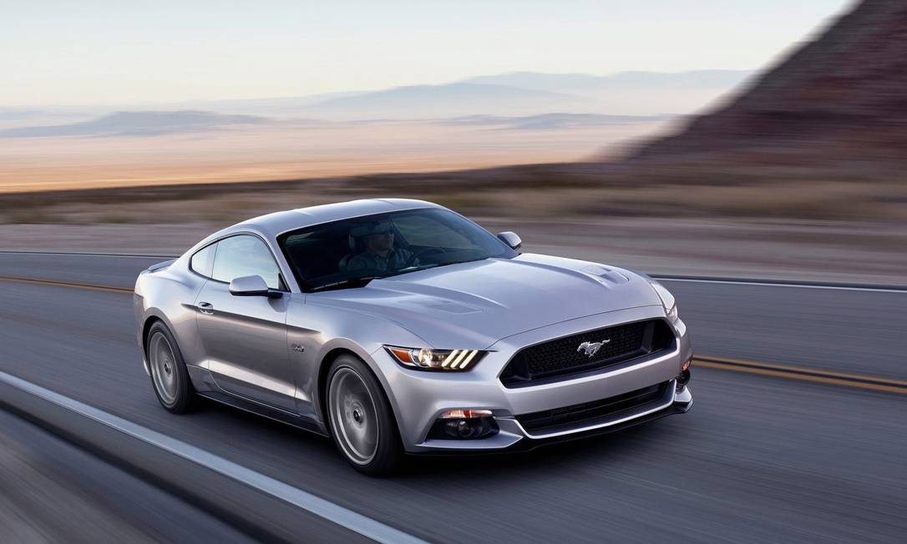
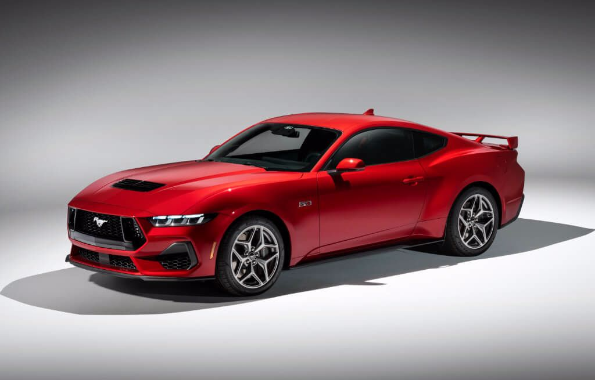

Geração 1 (1964-1973)
A primeira geração do Ford Mustang foi lançada na feira Mundial de Nova York no dia 17 de Abril de 1964. Um carro que superou todas as expectativas de vendas já no seu lançamento, no primeiro dia de vendas, foi comercializado 22.000 veículos a um preço de U$$ 2.368,00 e tendo mais de um milhão de unidades vendidas no segundo ano após o lançamento. Na primeira geração foi lançado com motor V6 ou V8.
Geração 2 (1974-1978)
A segunda geração foi lançada no final do ano de 1973, já como modelo 1974. Por conta da crise do petróleo nos USA, foi um carro muito menor a mais leve que seu antecessor. Teve de optar por um motor 4 cilindros de apenas 88hp ou V6 de 105hp, tendo um V8 novamente só no ano seguinte, em 1975.
Geração 3 (1979-1993)
A terceira geração lançada em 1979, conhecida como Fox Body foi a mais longeva até hoje, durando 14 anos até o ano de 1993. Os motores variavam dos 4 cilindros, V6 ou até o motor V8 de 210hp.
Geração 4 (1994-2004)
A quarta geração lançada em novembro de 1993 como modelo 1994 foi fabricada até o ano de 2004. Foi um modelo completamente diferente dos demais, com linhas mais arredondadas ao estilo do design dos carros Japoneses à época. Foi disponibilizado com motores V6 ou V8 de até 215hp ou séries especiais que podiam chegar a 385hp e atingir 285km/h de velocidade máxima.
Geração 5 (2005-2014)
A quinta geração lançada em 2005, sendo fabricada até o ano de 2014. Esta geração é marcada por um design mais retro, inspirado no Mustang Fastback 1968 de primeira geração. Novamente trazia os motores em V clássicos que fizeram sucesso no Muscle Car mais longevo de todos, V6 e V8 com até 412hp.
Geração 6 (2015-2023)
A sexta geração do Mustang foi lançada em dezembro de 2013 como modelo 2015 e uma serie especial de comemoração aos 50 anos de fabricação do carro. Esta também foi o primeiro Mustang a ser vendido globalmente pela Ford. Em face das novas regras de emissão e consumo cada vez mais rígidas, foi introduzido novamente um motor 4 cilindros, porem este turbo e com potencia de 310hp, além dos já clássicos V6 de 300hp e o V8 de 435hp. A sexta geração também marcou o uso do nome Mustang em um SUV elétrico da Ford, o Mustang E-Mach.
Geração 7 (2024-atual)
A sétima geração do Mustang foi apresentada em 2022 e começou as vendas em 2023 já como modelo 2024. Manteve o motor 4 cilindros 2.3 turbo com 315hp e o tradicional motor V8 com 500hp, por ter perdido o motor V6 já na geração anterior e não ter esta opção disponível agora, o único motor que esteve presente em todas as gerações foi o clássico V8. Nada mais justo para um clássico de mais de 60 anos manter o motor que lhe conferiu todo sucesso ao longo de todos estes anos..